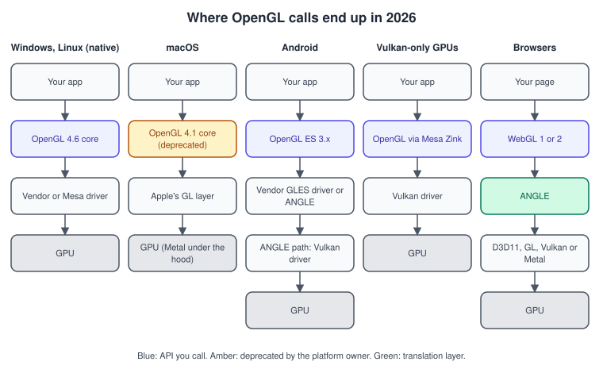
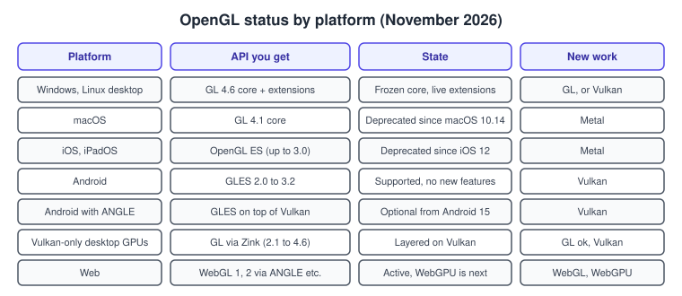
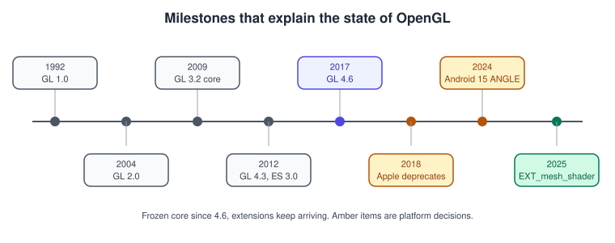

OpenGL in 2026
|
This content was generated with the assistance of AI and should be verified against the official documentation before being relied on in production. |
OpenGL is no longer the API that new engines are built on, but it is still one of the most widely deployed graphics APIs, the easiest one in which to learn how a GPU pipeline works, and an API that is still receiving extensions. This page explains what "still alive" means in 2026, what each platform vendor has said about it, which layers your OpenGL calls may pass through before they reach the GPU, and how to decide whether a new project should use it.
The facts were checked in November 2026. The versions documented are desktop OpenGL 4.6 with GLSL 4.60, OpenGL ES 3.2 with GLSL ES 3.20 and EGL 1.5. Platforms covered are Windows, Linux, macOS, Android, iOS and the web. Nothing on this page needs code to be installed; the one program shown prints information about the context it runs on, and can be built with the setup of Getting Started on the Desktop. For the general comparison of graphics APIs and engines see Choosing an API or Engine and History of Real-Time Graphics.
The short version
-
The core specification stopped at OpenGL 4.6 (first released 31 July 2017; the current specification document is dated 5 May 2022). GLSL stopped at 4.60 (specification dated 14 August 2023). The Khronos registry lists no 4.7 or 5.0.
-
The ES line stopped at OpenGL ES 3.2 (GLSL ES 3.20). ES 1.x is deprecated.
-
Extensions are still being written. In October 2025 Khronos announced
GL_EXT_mesh_shader, which brings mesh and task shaders to OpenGL (see Versions, Profiles and Extensions). -
Apple froze OpenGL at 4.1 on macOS and deprecated it (and OpenGL ES) in 2018.
-
Android still supports OpenGL ES, but its documentation says ES is no longer under active feature development, recommends Vulkan for new projects and ships ANGLE as an optional layer that runs ES on Vulkan.
-
Mesa Zink gives GPUs that only have a Vulkan driver a desktop OpenGL implementation, and ANGLE implements WebGL on top of the native API of each platform.
OpenGL is therefore a stable, frozen target: what you learn on 4.1 or 4.6 keeps working, but the effort of the industry has moved to Vulkan, Metal, Direct3D 12 and WebGPU.

The figure is the key to the rest of the page. Your code calls the same functions in every column; what differs is the thing that implements them. When a bug appears on one platform only, the first question is always which column you are in.
Frozen core, live extensions
A new OpenGL version needs the Khronos working group to agree on a feature set, and the group’s energy went into Vulkan after OpenGL 4.6. New hardware capabilities now reach OpenGL as extensions: documents in the Khronos registry that add functions and enumerants to a context without changing its version number. Extensions come in families, covered in detail in Versions, Profiles and Extensions:
| Prefix | Meaning |
|---|---|
|
Ratified by Khronos and meant to work on desktop GL and ES alike, for example |
|
Approved by the Architecture Review Board; most of them became core features in a later version. |
|
Written by several vendors together; |
|
Single-vendor extensions, available only on that vendor’s hardware. |
Mesh shaders matter for this section because they show that "frozen" does not mean "dead": the extension was published with a Khronos announcement titled "OpenGL resurges in 2025 with mesh shader extensions for gaming". Whether a given driver exposes it is a runtime question; the page Mesh Shaders shows how to check and use it.
The practical consequence is that a 2026 OpenGL program is written against a baseline (this section uses a 4.1 core baseline so that it also runs on macOS) and enables optional paths when the context reports a higher version or an extension.
Apple: deprecated and frozen
Apple deprecated OpenGL on macOS in macOS 10.14 and OpenGL ES on iOS in iOS 12, both in 2018, and recommends Metal for new work;
the starting point is the page "Migrating OpenGL code to Metal" in Apple’s developer documentation. OpenGL on macOS is
limited to a 4.1 core profile (and 2.1 legacy profile), which means that none of the features introduced by 4.2 to 4.6
(image load/store, compute shaders, SSBOs, KHR_debug, buffer storage, DSA, SPIR-V) are available there. macOS also requires
a forward-compatible core context; the hints are shown in
Getting Started on the Desktop.
Consequences for a project that must run on a Mac:
-
write the baseline against 4.1 (the Bookshelf GL project of this section does);
-
check for newer features at run time instead of assuming them;
-
keep rendering code in a small layer so that a Metal or ANGLE backend can replace it later, as described in OpenGL ES on iOS and macOS and Porting to Vulkan, Metal and WebGPU.
Existing OpenGL applications continue to run on macOS, which is why the deprecation matters for planning but is not an emergency.
Android: still supported, moving to ANGLE
Android’s OpenGL ES guide lists the versions and the API levels that introduced them:
| OpenGL ES version | Android version |
|---|---|
2.0 |
Android 2.2 (API level 8) and higher |
3.0 |
Android 4.3 (API level 18) and higher |
3.1 |
Android 5.0 (API level 21) and higher |
3.2 |
Android 7.0 (API level 24) and higher |
The guide adds that the device manufacturer must still provide the implementation, so the Android version alone does not prove
support; ES 1.0 and 1.1 are deprecated. A version requirement is declared in the manifest, which makes Google Play restrict installation to matching devices
(0x00030001 is 3.1 and 0x00030002 is 3.2):
<uses-feature android:glEsVersion="0x00030000" android:required="true" />Source: Android: OpenGL ES
The Android pages of this section go through the details in
OpenGL ES on Android; the Kotlin and GLSurfaceView integration is in
Graphics, Canvas and OpenGL ES and is not repeated here.
What the Android Vulkan documentation says about the future of OpenGL ES, as checked in November 2026:
-
Vulkan is described as the primary low-level graphics API on Android; OpenGL ES is still supported but no longer under active feature development, and Google continues to support ES on all devices.
-
Android 15 and higher includes ANGLE as an optional layer that runs OpenGL ES on top of Vulkan. For an existing ES game the documentation tells developers to test the ANGLE driver with adb commands; for new projects it says to use Vulkan.
-
From Android 17 a game can opt in with a manifest meta-data entry,
com.android.graphics.driver.prefer_angle, set totrue. The page stresses that this is a signal to prefer ANGLE, not a guarantee: if ANGLE cannot be used, the GPU vendor’s ES driver is used instead. -
Google states the intention to ship ANGLE as the system ES driver on more new devices, with the expectation that OpenGL ES will ultimately be available only through ANGLE.
For you this means: an ES 3.x renderer keeps working, may be silently running on Vulkan through ANGLE on some devices, and should be tested both ways. Differences between a vendor ES driver and ANGLE are usually in precision, extension lists and bug behaviour, not in the API.
Zink, ANGLE and the translation layers
Two open source projects change what "OpenGL driver" means.
Mesa Zink is a Gallium driver in Mesa that implements OpenGL by issuing Vulkan calls instead of programming one GPU architecture directly. Mesa’s documentation states that it supports OpenGL from 2.1 up to 4.6 depending on the device, because the version it can expose depends on both Zink’s own implementation and the capabilities of the Vulkan driver beneath it. It lets a GPU or operating system that has only a Vulkan driver run desktop OpenGL applications.
ANGLE (Almost Native Graphics Layer Engine) implements OpenGL ES, and through it WebGL, on top of other APIs. Its repository lists backends for Direct3D 11, desktop OpenGL, Vulkan and Metal. Browsers use it to give WebGL the same behaviour on every platform, and Android can use it as described above. The general landscape of such layers is in Cross-Platform Translation Layers.

Software rendering belongs to the same family: Mesa’s llvmpipe implements OpenGL on the CPU and is the usual way to run GL tests on a build server without a GPU (see Contexts, Windows and Loaders).
How the situation came about

The timeline shows the facts that explain the present: the programmable pipeline (2.0), the core profile that removed the fixed-function API (3.2), compute shaders and debugging in 4.3 (2012), the final 4.6 release in 2017, Apple’s decision in 2018 and the 2025 extension. The longer story is in History of Real-Time Graphics.
Finding out which implementation you are running on
Because the same calls may go to a vendor driver, ANGLE, Zink or Mesa’s software rasteriser, a program should print what it
got. The example below assumes a current context created as in the getting-started page and a loader that exposes
glGetString and glGetIntegerv; it prints the version, renderer and profile, and guesses the layer from the renderer string.
#include <glad/gl.h>
#include <cstdio>
#include <string>
// Call this once, with a current context.
void print_context_summary() {
const auto str = [](GLenum name) {
const GLubyte* s = glGetString(name);
return std::string(s ? reinterpret_cast<const char*>(s) : "(null)");
};
GLint major = 0, minor = 0, profile = 0, flags = 0;
glGetIntegerv(GL_MAJOR_VERSION, &major);
glGetIntegerv(GL_MINOR_VERSION, &minor);
glGetIntegerv(GL_CONTEXT_PROFILE_MASK, &profile);
glGetIntegerv(GL_CONTEXT_FLAGS, &flags);
const std::string renderer = str(GL_RENDERER);
std::printf("GL version : %s (%d.%d)\n", str(GL_VERSION).c_str(), major, minor);
std::printf("GLSL version: %s\n", str(GL_SHADING_LANGUAGE_VERSION).c_str());
std::printf("Vendor : %s\n", str(GL_VENDOR).c_str());
std::printf("Renderer : %s\n", renderer.c_str());
std::printf("Core profile: %s\n",
(profile & GL_CONTEXT_CORE_PROFILE_BIT) ? "yes" : "no");
std::printf("Forward-compatible: %s\n",
(flags & GL_CONTEXT_FLAG_FORWARD_COMPATIBLE_BIT) ? "yes" : "no");
// Heuristics only: the strings are not standardised.
if (renderer.rfind("ANGLE", 0) == 0) {
std::puts("Layer : looks like ANGLE (GL ES or GL translated)");
} else if (renderer.find("zink") != std::string::npos ||
renderer.find("Zink") != std::string::npos) {
std::puts("Layer : looks like Mesa Zink (GL on Vulkan)");
} else if (renderer.find("llvmpipe") != std::string::npos) {
std::puts("Layer : Mesa llvmpipe (software rasteriser)");
} else {
std::puts("Layer : native or unknown");
}
}The renderer strings are informative, not guaranteed; use them in logs and bug reports, not to switch behaviour. Switch on version numbers and extension availability instead.
Decision guide
OpenGL remains a good choice when:
-
you are learning how the pipeline works, because a handful of calls produces an image and the driver does the rest of the work (the general ideas are in The Rendering Pipeline and Explicit vs Implicit APIs);
-
you maintain an existing code base, a tool, a scientific viewer or a CAD application that must run on old and new desktops;
-
you need one API that runs on Windows, Linux and (through the 4.1 baseline) macOS without a translation layer;
-
you target embedded Linux boards whose drivers expose ES but not Vulkan.
It is a weaker choice when you need multi-threaded command recording, explicit memory control, ray tracing, modern mesh pipelines on every vendor or the first-party support of a platform owner. Those needs point to Vulkan, Metal or Direct3D 12, and the porting map in Porting to Vulkan, Metal and WebGPU shows how the concepts carry over.
Where older books and tutorials are out of date
Many of the books and tutorials this section is written to complement are older than the facts above. Typical corrections:
| Older material says | What is current |
|---|---|
OpenGL 2.1 is the latest version (2007-era books) |
Desktop OpenGL ends at 4.6 (2017, specification revision 2022); the core profile has been the learning target since 3.2 (2009). |
Mesa supports only an old OpenGL (2007-era books) |
Mesa provides modern desktop OpenGL in its hardware drivers, in llvmpipe and, on Vulkan-only GPUs, through Zink. |
Mac OS X examples use AGL or |
OpenGL is deprecated on macOS since 10.14 and limited to 4.1 core; use Metal for new work. |
ES 2.0 and ES 3.0 books target Android 4.x and iOS 7 and treat OpenGL ES as the mobile API |
OpenGL ES is deprecated on iOS since iOS 12; on Android it is supported but not actively extended, Vulkan is recommended and ANGLE is becoming the system ES driver. |
Examples depend on GLUT or the old opengl.org downloads |
Use GLFW or SDL with a generated loader such as glad2. |